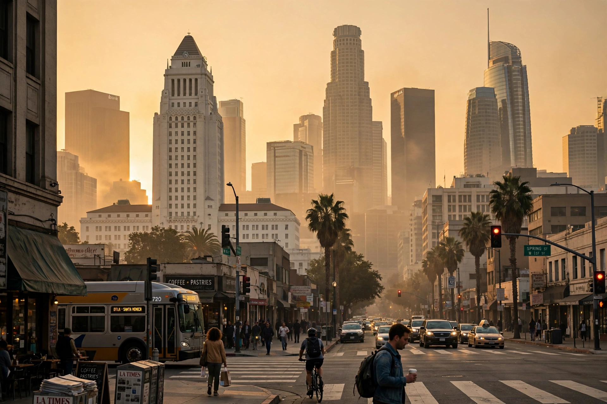

Top stories
California news leads the Los Angeles Times

The LA Times homepage is California-first: state politics, wildfires and water, Los Angeles city life, Hollywood and entertainment industry coverage, and the West's environment and immigration stories.
California
Sacramento, Sacramento politics and the state's big issues
The California section is the paper's heartland.
Entertainment
Hollywood, streaming and the industry
The hometown paper of the entertainment business.
World
Foreign news with a Pacific outlook
World and nation coverage.
Sports
Dodgers, Lakers, Rams and the LA scene
Los Angeles sports coverage.
Latest & most read
- Essential California: the morning newsletter
- The Envelope: awards-season coverage
- Wildfire and earthquake trackers
About
Background on this news organisation: Wikipedia article.